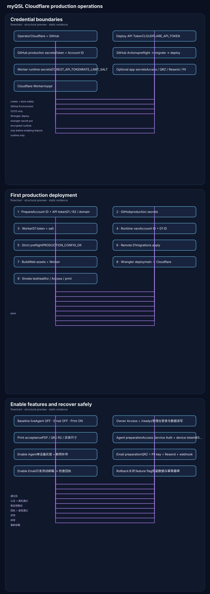

一、当前项目状态
以下是目前已经完成和仍需要手动完成的边界。
代码与工作流
v1.1–v1.2 代码、数据库迁移、生产预检、GitHub Actions、Agent 发布工作流和部署文档已经进入 main。
安全修正
GitHub Actions 使用固定提交 SHA；生产预检步骤已经显式接收 GitHub Environment 中的 Cloudflare 凭据。
部署凭据
GitHub production 环境和 Cloudflare Worker 远程 Secrets 目前需要由项目所有者配置。
真实环境
真实 Access、WSJT-X/N1MM、印刷尺寸、QRZ、Resend、Webhook、恢复演练尚未完成。
二、优化后的部署流程图
三张小图分别表达凭据边界、首次部署顺序和功能开启/回滚路径，避免把所有关系堆在一张图里。

图示由 Mermaid canonical v2 结构化预览生成；可编辑 Mermaid 源码见 cloudflare-production-guide.md，规范数据见 cloudflare-production-guide.diagrams.json。
三、凭据分层与安全边界
| 名称 | 保存位置 | 用途 | 现在是否需要 |
|---|---|---|---|
CLOUDFLARE_API_TOKEN | GitHub production Secret / 本地临时环境变量 | Wrangler 部署、D1 migration、查询远程 Secret | 必须 |
CLOUDFLARE_ACCOUNT_ID | GitHub production Secret；Worker vars 也要配置 | 定位 Cloudflare 账号；D1 备份运行时使用 | 必须 |
D1_REST_API_TOKEN | Cloudflare Worker Secret | Worker 调用 D1 Export API 做备份 | 必须 |
RATE_LIMIT_SALT | Cloudflare Worker Secret | 公共接口限流哈希盐 | 必须 |
AGENT_ACCESS_CLIENT_SECRET | Cloudflare Worker Secret | Agent 的 Access Service Auth | 开启 Agent 前 |
QRZ_* / RESEND_* / PII_KEY_* | Cloudflare Worker Secret | QRZ 查邮箱、PII 加密、邮件发送和回执 | 开启邮件前 |
PUBLIC_ORIGIN / ACCESS_AUD / D1_DATABASE_ID | wrangler.jsonc vars | 公开运行配置和资源标识，不是密码 | 可以提交 Git |
CLOUDFLARE_API_TOKEN、D1_REST_API_TOKEN、AGENT_ACCESS_CLIENT_SECRET、QRZ 密码、Resend API Key、PII 加密密钥、私钥和 Bearer Token。四、必须由你执行的步骤
创建部署 API Token
Cloudflare Dashboard → Account → API Tokens → Custom Token。授权 Workers Scripts Write、D1 Edit、Workers R2 Storage Write、Account Settings Read。如自定义域名报权限错误，再增加 Zone 的 Workers Routes Write。
添加 GitHub production Secrets
GitHub → Settings → Environments → production → Environment secrets。添加 CLOUDFLARE_API_TOKEN 和 CLOUDFLARE_ACCOUNT_ID。当前工作流明确读取这个 Environment。
创建 D1 运行 Token
建议单独创建一个只有 D1 Edit 的 Token，作为 D1_REST_API_TOKEN。不要把生产部署 Token 直接暴露给 Worker 运行时。
写入 Worker Secrets
在本地项目目录使用 wrangler secret put 写入 D1_REST_API_TOKEN 和 RATE_LIMIT_SALT。Cloudflare 只显示 Secret 名称，不会显示 Secret 内容。
补齐运行时 vars
在 wrangler.jsonc 的 vars 中加入真实的 CLOUDFLARE_ACCOUNT_ID 和现有 D1 ID：4d33ddbf-9ed2-4b96-a435-a8e6dc175b96。这两个是资源标识，不是密钥。
执行严格预检
本地导出部署 Token 和 Account ID 后运行 pnpm verify:production --strict。必须看到 PRODUCTION_CONFIG_OK 才继续。
运行 GitHub 部署
GitHub → Actions → deploy-cloudflare → Run workflow → 选择 main。流程会执行 OpenAPI 漂移检查、D1 远程迁移、构建和 Wrangler 部署。
执行基础验收
先检查 https://myqsl.203031.xyz/healthz，再登录 Owner Access 测试 /readyz、管理台、卡片、打印和 R2 文件。
五、可复制的命令
本地设置部署凭据
cd /Users/zhangneil/WorkBuddy/HAM/eqsr
read -r -s "CLOUDFLARE_API_TOKEN?Cloudflare API Token: "
export CLOUDFLARE_API_TOKEN
read -r "CLOUDFLARE_ACCOUNT_ID?Cloudflare Account ID: "
export CLOUDFLARE_ACCOUNT_ID
pnpm exec wrangler whoami写入 Worker Secrets
pnpm exec wrangler secret put D1_REST_API_TOKEN --config wrangler.jsonc
openssl rand -hex 32
pnpm exec wrangler secret put RATE_LIMIT_SALT --config wrangler.jsonc
pnpm exec wrangler secret list --config wrangler.jsonc执行预检和部署后检查
pnpm verify:production --strict
curl -i https://myqsl.203031.xyz/healthz
# GitHub 页面：Actions → deploy-cloudflare → Run workflow六、基础部署成功后的功能开启顺序
- Owner Access：登录管理台，确认
/readyz返回正常，Owner API 的 JWT issuer/audience 校验正常。 - 打印：保持
FEATURE_PRINT=1，验证 PDF、QR、出血、R2 文件和实体纸张尺寸。 - Agent：先配置 Access Service Auth、设备 Token、WSJT-X UDP 2237、N1MM UDP 12060，再只给单台设备开启
FEATURE_AGENT_INGEST=1。 - 邮件：先配置 QRZ、PII Key、Resend 域名和 Webhook，只发自己的测试邮箱，确认回执、退信和幂等后再开启
FEATURE_EMAIL_DELIVERY=1。 - 备份：确认 D1 Backup Workflow 能访问 D1 Export API，并在 R2 看到备份 SQL 和 manifest。
七、失败时怎么处理
| 现象 | 判断 | 处理 |
|---|---|---|
Remote secrets could not be retrieved | GitHub Token 不存在、未传入或权限不足 | 检查 production Environment，确认两项 GitHub Secret 名称完全一致。 |
D1_REST_API_TOKEN is missing | Worker 远程 Secret 未写入 | 重新执行 wrangler secret put D1_REST_API_TOKEN。 |
| Worker 能部署，备份失败 | 运行时缺少 Account ID 或 D1 ID | 补齐 wrangler.jsonc 的 vars 后重新部署。 |
401 Owner API | Access Team Domain 或 AUD 不匹配 | 核对 Access 应用的 issuer 和 Application Audience。 |
404 Agent API | Agent 功能开关仍为 0 | 先完成 Service Auth 和设备验收，再按单设备灰度开启。 |
| 邮件重复发送或状态不一致 | 外部 provider 与 D1 outbox 状态需要核对 | 先关闭邮件开关，不要直接批量重发；保留 provider key 和幂等记录。 |
八、回滚原则
FEATURE_AGENT_INGEST 或 FEATURE_EMAIL_DELIVERY 改回 0 并重新部署。应用版本回滚使用 Cloudflare Deployments；不要逆向删除已经执行的 D1 migration。{kind=link}